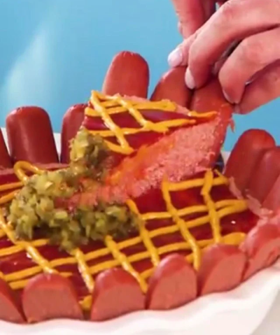

Cold Hot Dog Pie

Description
Cold hot dog pie. Please do not make this.
Ingredients
- 2 hot dog buns, processed into small crumbs
- 2 tablespoons unsalted butter, melted
- 3 ¾ pounds jumbo hot dogs, divided
- 2 gelatin sheets
- 1 cup water, divided
- ⅓ cup ketchup
- 2 tablespoons mustard
- 2 tablespoons pickle relish
Steps
-
Preheat oven to 350°F. Stir together bun crumbs and melted butter in a small bowl;
press mixture in bottom of a 9-inch deep pie dish, and bake in preheated oven 10 minutes. Cool 5 minutes.
-
Combine gelatin and 1/2 cup of the water in a medium oven-safe bowl;
whisk mixture over a double boiler until dissolved and foamy, about 3 minutes. Set aside.
-
Cut 2 pounds of the hot dogs (about 15) into 1-inch pieces. Place hot dogs and remaining liquid from hot dog package in blender or food processor,
and blend until smooth. Add remaining water, as needed. Add bloomed gelatin, and process until thoroughly combined. Pour filling into prepared crust.
-
Cut remaining hot dogs (about 1 3/4 pounds) in half, and slice each half lengthwise.
Line hot dogs pieces along sides of pie plate, pressing them into the filling with cut side facing out. Chill pie at least 2 hours.
-
Spread ketchup over top of pie leaving a 1/2 inch border. Drizzle with mustard, and place relish in the center. Slice and enjoy!